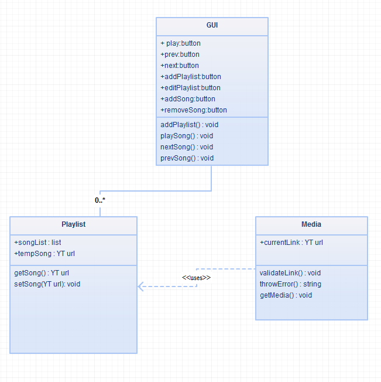
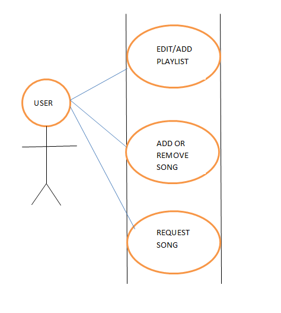
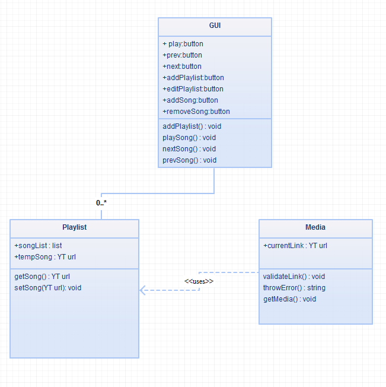
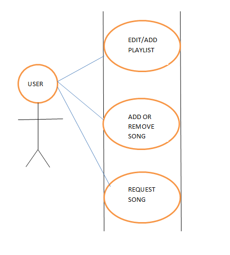

Below is a list of projects that are currently in production or have already been completed. The list runs from most recent to least recent. To get the full effect of finished projects, please download the project which is of interest to you. If for some reason a link does not work, please notify me at: bbeshel@slu.edu
This project is still ongoing.
Click here to test this project!
This is a project that essentially allows the user to upload an image (or not)
and paint on it. It is written using HTML5's canvas and JavaScript.
Most of the code you see here is starter code provided by
Eloquent JavaScript.
However, I have used this as a jumping-off point so that I can simply modify
the paint environment to add all the functionality my client has requested.
Current modifications include auto-closing a free-drawn path, filling the
path with a transparent, colored field, and resizing the image the user
inputs to the canvas size.
**Note: Due to a Non-Disclosure Agreement, I am not allowed to speak about
the entirety of the requirements.**
This project is still ongoing.
This project is simply a concept at the moment. I only wanted to add this here
to demonstrate some of the various software engineering techniques my group and
I are using to layout the design portion of this project. The project will
eventually allow a Chrome user to download this extension and be able to edit
playlists of media from YouTube, only the extension will act as the media player,
and will serve as an audio player only.
Below, in order: Data Flow Diagram, Entity Class Diagram, Use Case
Diagram, State Chart
 




This was the final project for my Object Oriented Design course. It was
created without any external existing resources - all graphics, classes and code
were created by me.
The game is simple: use the arrow keys to move your character around the map.
You must collect all the keys to open the color-coordinated doors to reach the
green goal. However, the map seems impossible - but it is not!
**Note: I do not have a .jar file of this project at the moment -
in the .rar below, you can see all the .java files associated with the
project. The file runs from the "MazeGame.java" file in an IDE such as
Eclipse.**

Click to download the source files
.
This was a midterm project for my Object Oriented Design course. It
involves creation of images using the Graphics package provided in the
JRE, event listeners, and GUI elements. We initially were provided with
the White game pieces, but they could not double jump or king, and the
game could not be reset, until I implemented it.

Click to download the game
.
My earliest project!
This one took quite a bit of self-learning. GUI elements, action listeners, and
stream writers/readers were completely foreign to me during this project,
so much of this was very difficult to me - especially since I had only
a year or so of programming experience in Java. This was completed in 2012.
Click to download the full project with documentation.